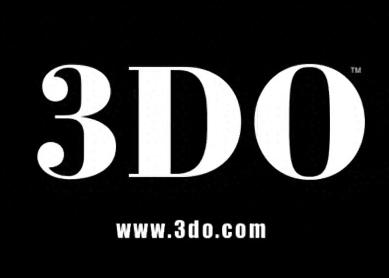
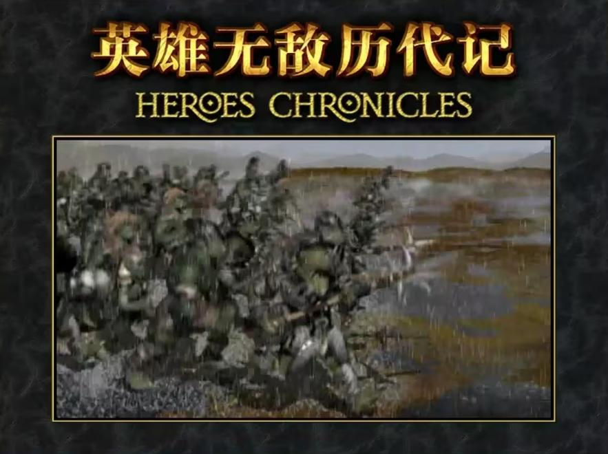
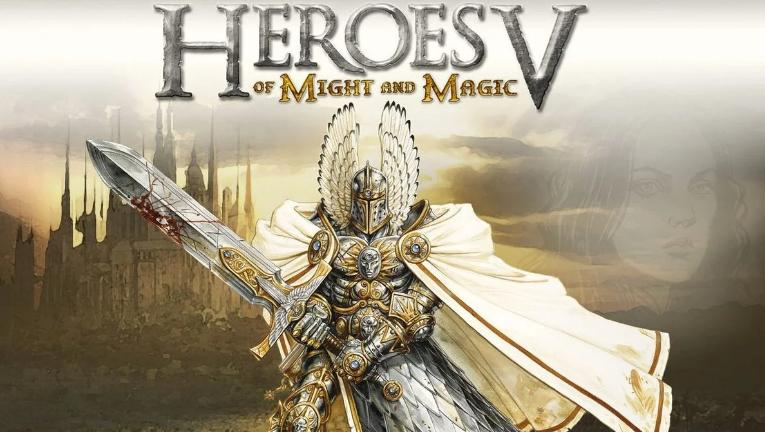

被骂“换皮”的《英雄无敌5》，十几年后再看反而顺眼了

2026-06-24·街机时代
启动《英雄无敌》最爽的一刻是什么？对我来说一直是开头那几秒：3DO的低沉logo一响，NWC的动画片头一亮，整个人就进入了状态。你可能不知道，《英雄无敌》最初只是《魔法门》的一个衍生品，但它后来硬是活成了回合制策略绕不过去的名字。

三代是巅峰。“历代记”那种资料片都能出八部，你就知道当年这游戏有多能打。然后四代来了，改得太大，把老玩家搞懵了。再然后3DO没了，NWC也没了，IP被育碧接盘。那会儿大家心里基本给这系列判了死刑。
所以2006年五代出来的时候，身边老玩家的心情很拧巴：期待是真期待，但心里完全没底。俄罗斯Nival工作室接手，这帮人技术没问题，《闪电战》《寂静风暴》都摆在那，可毕竟不是原班人马。游戏首发后，论坛上一片骂声——“3D换皮”“炒冷饭”“育碧割韭菜”。我当年也这么觉得。

但你真打开五代第一场战斗，最直观的感受是什么？视觉冲击。2006年，满大街还是像素游戏，五代突然给你来了个全3D，所有兵种重新建模。圣堂狮鹫多了铁头盔，人类骑士更干练，天使第一次用了女性造型——关键是天使挥剑时剑刃上会带一道金属颤音，听着特别脆。恶魔出场时屏幕会轻微震一下，那对角和体型压过来，确实有压迫感。战斗特效全面翻新，还加了一套战场特写：弓手射箭、英雄施法，镜头都会跟着走。当然毛病也明显，镜头偶尔抽风，角度一歪挡住关键视野，恨不得拍键盘。
玩法上，五代胆子很小。说难听点，就是“照着三代来，别犯错”。但有几个调整拿捏得还行：四代那个乱糟糟的UI被彻底扔了，新界面清爽得多；英雄能打但必须待在后排，伤害也压了，不像四代直接下场把平衡搞崩了。不过有个BUG特离谱——人族近战英雄有时候能无视城墙直接冲进城砍人，我第一次遇到真以为自己眼花了。ATB行动条算五代为数不多的真创新，谁先动谁后动一清二楚，士气法术技能都会影响出手顺序，比三代固定回合制更有变数。说真的，2006年的五代确实谈不上惊艳，玩法保守，原创少，平衡性一般。当年被骂换皮，不冤。
但真正让风评逆转的，是后面两部资料片。
《命运之锤》和《东方部落》把缺的种族补齐了，技能天赋系统也打磨得差不多。矮人、兽人、地牢这些新种族，每个都有独立的建筑树和兵种线，打法完全不一样。原版那些被诟病的短板，资料片一条条给填平了。我去年还专门开了一局《东方部落》，匹配速度居然比七代还快——你可想而知后面那两部续作混成什么样了。
说到这儿就不得不提六代和七代。六代把策略深度砍了大半，七代直接半成品就推出来，BUG满天飞，建模糊弄人，数值也崩了。老玩家的热情算是彻底被耗干了。反而是五代，靠这两部资料片把底子撑住了。它当然追不上封神的三代，但在育碧接手之后的所有续作里，它确实是最像样、最让人愿意再开一局的那一部。
关于我们
📱 公众号名称：三天笔记
✍️ 作者：曾三天
扫码关注公众号，获取每日最新资讯

商务合作与版权
商务合作 / 内容投稿 / 品牌推广
请关注公众号「三天笔记」后台留言联系
版权声明：本文由作者整理，转载需注明出处。